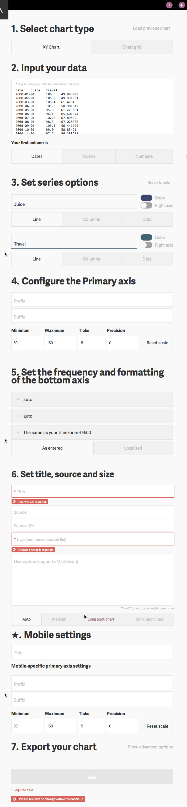
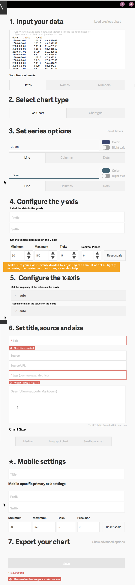

Pain Points and Design Opportunities
A lot can be done very easily!



Atlas Chart Creator
If Atlas becomes a hub for the data community it will help improve brand awareness for Quartz and can bring in a new community of loyal users.
We wanted to test the onboarding experience for users that are not part of Quartz and received no previous training in Atlas. If we want Atlas to scale beyond the Quartz newsroom, users need to understand instructions on the interface easily enough to be able to create a chart without extra help.
We conducted in person verb based tasks and interviews. For the task we asked the users to create and publish a chart to Atlas (we provided them with a simple data set to use, and they were logged in to the platform already). The screen and mic recorded during the task, and users were asked to think aloud and to indicate if any step in the process was confusing.
Our goal was to test the interface with real potential users of Atlas, so we recruited people who work with data on a somewhat regular basis and might have a need for a tool to visualize, publish and share the data that they are working with.
We recruited 7 volunteers for testing:
3 Social scientists working at nonprofits
3 Graphic and web designers working for data oriented organizations
1 Data scientist / programmer
Art by: http://sabrinasmelko.com
Eric works in a small nonprofit media organization. He is a designer and web developer. A big part of his work is creating the images, charts and infographics that are published on the website. Reporters working with data often come up to him with a spreadsheet and ask him to help them make the chart to illustrate their stories, or with a chart they have created using excel.
You won't believe how much time I waste just standardizing all the fonts and the colors in the charts so that we can publish them.
Art by: http://sabrinasmelko.com
Marian works for a non-profit implementing health programs for women in the Bronx. She coordinates the program and evaluates the results and impact. She produces charts for the monthly reports.
I work with data all the time, and when I have to make charts I just use the same tools I use for my spreadsheets, either Excel or Stata. But I hate the charts I make! I'm even thinking of taking a data viz class.
A lot can be done very easily!